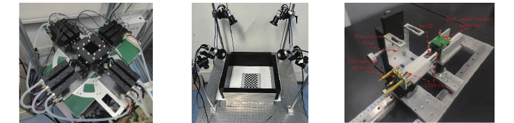
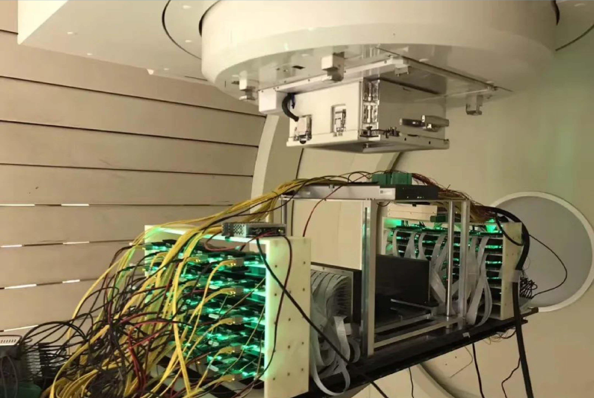

加速基础科学进程
PET为生命过程建立时间与分子坐标
许多生命科学问题不能靠固定切片回答。肿瘤的葡萄糖代谢会随缺氧和治疗改变，神经递质释放发生在行为过程中，免疫细胞会在器官之间迁移，药物既要抵达病灶也会在肝肾代谢。组织学能够提供细胞级细节，却通常需要取样甚至终止实验；血液检测能连续采样，却缺少全身空间位置；结构影像能显示解剖变化，却未必对早期分子事件敏感。
PET利用示踪剂把一个生物学问题编码进可探测的核素。葡萄糖类似物反映糖代谢，特异性配体可以指向受体、酶或异常蛋白，标记药物可以显示体内分布。探测器测到的不是抽象“亮度”，而是核素衰变产生的符合事件；经过衰减、散射、随机符合和系统响应校正后，事件统计可转化为活度浓度及动力学参数。
“无创”使纵向研究成为可能。同一个体可以在疾病发生、治疗介入和康复阶段重复成像，从而把个体间差异转化为个体内变化。小动物研究可减少为不同时间点设置的动物数量，临床研究可观察患者的真实生理过程。对于发展、衰老、营养、运动和慢性疾病，这种时间连续性尤其重要。
“定量”使PET超越肉眼判读。静态图像中的标准摄取值能够做半定量比较；动态采集结合血液输入函数和房室模型，可估计示踪剂从血液到组织的转运、不可逆摄取速率、分布容积或受体结合潜能。参数模型未必适合所有组织，但它为把图像变成可检验生理假设提供了数学语言。
“全身”使器官间关系成为可观测对象。免疫、内分泌、代谢和药物作用都不是单器官事件。若不同器官在不同床位和不同时间采集，快速过程难以直接比较；若长轴视野系统同时覆盖主要器官，研究者可以在同一时间基准上建立时间—活度曲线，研究信号从血池进入肝、脑、肌肉、肿瘤和排泄系统的顺序。
PET的另一项价值是可转化性。相同或相近的示踪原理能够从细胞实验、小动物模型逐步走向人体研究，仪器尺度和剂量发生变化，但问题链保持连续。研究者可以先验证靶点、再研究药代、最后评估患者中的靶点表达与治疗反应。这条跨尺度路径对新核药、新药和诊疗一体化至关重要。
然而，PET的科学价值受测量条件约束。可注射活度有限，短寿命核素快速衰变，微小结构出现部分容积效应，呼吸与运动造成模糊，低计数时间帧噪声高，示踪剂特异性和代谢产物会影响解释。基础科学需要的不只是“更清楚的图”，而是能够分辨信号来源、报告不确定性并允许不同模型竞争的数据。
科学研究突破要求PET实现精准、快速且持续的观察
低剂量与稀有靶点研究依赖弱信号和长时间观察
某些受体密度低，某些细胞群体稀少，某些药物只允许微剂量标记，儿童和健康志愿者研究又要求尽量降低辐射负担。这些场景共同需要高有效灵敏度：系统要收集更多真实符合、抑制随机与散射背景，并在低计数下给出稳定估计。若灵敏度增益只被用于追求更平滑的图像，而未进入实验设计，它的科学潜力就没有被充分释放。
延迟成像是另一种“弱信号”挑战。大分子探针、抗体和部分受体配体可能需要较长时间才能获得较好靶本底比，但核素不断衰变，传统系统在晚期时点计数不足。更敏感的系统能够把观察窗口向后延伸，研究慢动力学与清除过程，并为免疫PET和长半衰期核素提供更合适的工具。
时间分辨能力揭示运输、交换与反馈过程
动态PET把采集拆成连续时间帧。注射后的早期数秒到数分钟反映血流与快速输运，随后阶段反映组织摄取、代谢、结合与清除。时间帧越短，单帧计数越少；计数越少，参数估计越不稳定。高灵敏度、准确时间测量和统计重建必须协同，才能把“拍快”转化为可信动力学。
对神经科学而言，短暂刺激、任务切换和递质释放可能要求更高时间分辨；对心血管研究，血流在心动和呼吸周期中变化；对药物研究，首过效应可能只持续很短时间。科学问题要求系统保留事件时间戳，并允许研究者事后调整帧宽、门控和模型，而不是在采集时永久固定。
空间分辨能力兼顾微小结构、视野均匀性与作用深度
空间分辨率由晶体尺寸、正电子射程、非共线性、探测器几何、作用深度和重建共同决定。简单缩小晶体并不能无限提高分辨率：光收集会变难，通道数与数据量上升，远离视野中心时斜入射造成视差。脑、小动物、植物根系和细胞病理成像需要针对对象重新设计探测器，而不是把临床全身系统等比例缩小。
全视野均匀性同样重要。一个只在中心点表现优异的仪器，未必适合定量研究。专用脑PET需要覆盖皮层与深部结构，小动物系统要容纳不同姿态，长轴系统要控制轴向响应变化。研究突破要求空间分辨、灵敏度、定量偏差在整个目标区域被测量与报告。
自然状态成像减少麻醉、固定与运动伪影的影响
传统脑PET要求受试者保持静止，小动物常需麻醉。麻醉和束缚会改变神经、代谢和心血管状态，使研究对象偏离自然行为。头盔式探测、运动追踪和事件级运动校正可能把PET带入活动状态；双动态小动物系统则尝试同时记录动物脑部与全身生理。此类研究对轻量机械结构、实时几何、同步与算法提出新要求。
开放架构使新算法能够进入真实仪器
前沿问题往往没有现成协议。研究者需要改变符合时间窗、尝试新的散射模型、联合估计运动和活度、构建直接参数重建，或把人工智能放在脉冲处理而非最终图像阶段。若设备只输出封闭格式的最终图像，这些尝试无从进行。原始事件、几何模型、标定数据和可编程工作流因此成为科研基础设施。
可复现研究将“漂亮图像”转化为可靠证据
科学研究必须知道图像如何产生。采集时间、注射活度、残余剂量、重建迭代次数、滤波、校正、运动处理和软件版本都可能影响结果。新一代PET需要自动保存元数据、支持数据溯源，并通过标准模体、跨日稳定性和跨中心比对建立测量可信度。性能提升若没有不确定性评估，反而可能制造更自信的偏差。
全数字PET重新分配成像信息的控制权
传统PET已经发展为成熟可靠的临床技术，现代商业系统也广泛采用SiPM、TOF和先进迭代重建。把“传统”简单描述为落后并不准确。全数字PET的核心差异不是某个零件是否先进，而是原始闪烁脉冲是否在源头精确数字化、单事件信息是否被保留、探测器和处理流程是否能够由软件重构。
在模数混合链路中，模拟前端通过整形、积分和判别快速形成事件参数，硬件高效但很多决定不可逆。全数字路径以MVT等方法记录脉冲信息，再用数字算法估计时间与能量。它把一部分复杂度从固定电路转移到可升级的软件，也把原先只能由设备制造阶段决定的问题交给研究阶段重新选择。
这种转移对基础研究格外重要。研究者可以保存同一事件的多种特征，比较脉冲模型，识别堆积与异常波形；可以从单事件重新组织符合，改变时间窗和能窗；可以把探测器状态与图像误差对应起来；还可以在新算法出现后重处理旧实验。数据由一次性中间产品变成可持续研究对象。

| 科研关切 | 固定处理链的局限 | 全数字PET提供的支点 |
|---|---|---|
| 新脉冲算法 | 前端已完成不可逆整形或参数提取 | 保留过阈时间与事件级信息，可反复估计 |
| 低计数研究 | 丢失的原始信息无法由重建补回 | 联合使用时间、能量、位置和质量标志 |
| 新几何系统 | 电子学与固定整机深度绑定 | 模块化探测单元与统一设备描述 |
| 算法复现 | 处理流程封闭，关键参数不完整 | 软件化流程、版本记录与可重处理数据 |
| 跨学科协作 | 不同团队只能接触最终图像 | 从信号、事件到参数图的多层研究入口 |
全数字也不是没有代价。事件级数据规模巨大，长轴系统的吞吐和存储更高；软件自由增加验证组合；算法若依赖错误模型，数字结果同样会偏；通道阈值、温度和时钟偏差需要精细标定。它提供的是更高的信息上限与更灵活的研究路径，而非脱离实验条件的“自动正确”。
数字化、SiPM、TOF和长轴视野也应分别理解。SiPM改善紧凑性、磁兼容和定时潜力；TOF利用到达时间差提高响应线定位；长轴视野提高几何灵敏度并支持同步多器官成像；全数字架构保留并组织事件信息。优秀系统往往把这些能力组合起来，但科学论文应说明具体收益来自哪一层。
全数字PET通过五条技术路径形成五类科学证据
高保真脉冲数据支撑探测物理研究
闪烁光产生、传播和被SiPM转换的过程包含事件时间、能量、作用位置和探测器状态。数字采样让研究者能建立波形库，比较不同晶体、光电器件、偏压、温度和耦合方式。对堆积脉冲、暗计数、光学串扰与饱和的研究，不必只依赖最终能谱，而能回到事件形态寻找原因。
这类数据还可推动三维位置编码。伽马在晶体中的作用深度影响斜入射定位，精细晶体阵列的光分布携带深度信息。若探测器保留多通道光强与时间特征，统计模型或机器学习可估计三维位置。超精细编码能否转化为系统分辨率，仍需完整视野和真实计数率下验证。
准确时间测量支撑快速、低计数与动态实验
TOF并不是把湮没点直接测出来，而是为每条响应线增加概率约束。约束越强，重建越少依赖远处无关事件，低计数条件下的有效信噪比越高。研究者可以把收益用于更短帧宽，观察首过灌注；用于更低活度，开展纵向实验；或用于更精细体素，研究小结构。
事件时间戳还能与外部设备同步：行为摄像、脑电、呼吸、心电、治疗束流或光刺激都可以进入同一时间轴。全数字PET因此有机会成为多模态实验的一部分，而不是独立扫描设备。同步误差必须被测量，数据接口也需要开放，否则“同时采集”不等于“可解释地对齐”。
模块化探测器支持面向科学问题定制几何结构
基础研究对象千差万别。植物枝叶不适合圆环，小动物自然行为需要开放空间，质子束流需要穿过探测器之间的通道，脑成像希望探测器靠近头部，术中成像要求避开手术操作区。模块化全数字探测器可以组成平板、弧面、局部环和可变结构，几何由应用反推。
定制几何会带来不完整角度、灵敏度不均匀和校正困难。全数字架构的价值，是把这些几何和通道状态明确描述给重建算法，并保留单事件信息支持模型化补偿。专用系统不是牺牲“通用性”就自然获得优势，必须在目标任务上建立可量化的性能增益。

开放软件支持算法验证与跨学科联合实验
PnI把成像协议、算法模块和设备描述分层，使脉冲处理、符合、校正、重建与显示能够通过标准接口组合。电子学研究者可优化事件估计，数学研究者可研究逆问题，计算机研究者可验证并行与人工智能算法，医学研究者可定义可解释终点。共同数据语义减少跨学科协作中最昂贵的“翻译损失”。
开放软件还允许建立基准。相同原始数据可以用不同算法重建，相同算法可以在不同几何上测试，误差可与已知模体真值比较。若连同参数、代码版本、随机种子和标定文件一起保存，PET算法研究才能从展示个例走向可复现比较。

完整创新链形成从方法到真实场景的闭环
基础研究仪器很容易停在“能工作一次”的原型。数字PET实验室把关键材料、弱光器件、探测器、系统、软件和应用串联，意味着实验中的异常可以沿链路追溯：图像伪影可能来自重建，也可能来自晶体一致性、阈值漂移、同步或机械几何。跨层团队能更快定位瓶颈，应用反馈也能回到探测器设计。
与医院和产业伙伴的合作则把科研问题放入真实约束。患者工作流要求速度与可靠性，临床试验要求安全和统计证据，生产要求一致性，法规要求可追溯。科学仪器经过这些约束后，更有可能形成稳定的共享平台；与此同时，临床问题也会反向提出新的基础研究主题，如运动校正、低剂量定量和治疗响应早期评价。
全数字PET有望推动多领域科学研究突破
绘制人体器官之间的动态分子网络
长轴全身动态PET可能把系统生理学从概念推进到人体测量。研究者可同步观察葡萄糖、脂肪酸、氨基酸或免疫探针在多个器官中的时间过程，构建器官间的延迟、耦合与反馈模型。它可能帮助解释肿瘤如何改变全身代谢、心肌损伤如何引发免疫反应、炎症如何在骨髓—脾—病灶轴上传播。
真正的突破不会只靠相关性网络。器官时间曲线受血流、体积、代谢物和部分容积影响，必须结合生理模型、干预实验与独立生物标志物。全数字PET提供同步数据，但因果解释需要严谨设计。
在自然行为中研究脑—身体耦合
头盔式PET、双动态小动物PET和高精度运动校正结合后，可能研究运动、学习、社交和应激过程中脑代谢与外周器官的协同。对帕金森病、癫痫、抑郁和神经免疫疾病，脑部变化与肠道、免疫和内分泌系统之间的关系是重要前沿。
可穿戴不等于完全无干扰。设备重量、线缆、视野、行为环境和示踪剂动力学都会影响实验。未来需要把行为学、神经科学、机械工程和影像物理一起纳入方案，并公开运动校正失败和数据排除标准。
加速新示踪剂与新药的“从靶点到人体”路径
高灵敏度低剂量成像可支持微剂量首人体研究，在较低风险下观察候选药物的全身分布、靶器官进入与清除。延迟成像可服务慢动力学探针，多示踪剂序列可能在一次研究中比较不同代谢或受体通路。更早获得人体药代证据，有机会帮助淘汰不合适候选物并优化剂量。
这仍依赖放射化学、毒理、质量控制和监管。PET不能挽救缺乏特异性的探针，也不能用成像替代全部药效和安全性试验。它的贡献是把过去不可见的体内分布变成可量化证据。
让质子和重离子治疗获得在线“射程眼睛”
In-beam PET若能稳定识别治疗诱发核素，并将活度分布与计划剂量、组织成分和束流日志结合，可能提供分次内或分次间的射程验证。未来研究可能从“是否偏移”推进到误差来源识别和自适应治疗决策，让粒子治疗的物理优势得到更可靠发挥。
PET测得的活度并非剂量本身。核反应截面、元素组成、生物冲刷和探测几何都影响关系。突破需要蒙特卡洛模拟、核数据、医学物理与临床结局共同验证，不能用单次漂亮图像替代剂量学证据。

揭示植物碳分配与逆境响应的动态规律
植物PET可以用碳、氮或水相关示踪剂观察光合产物从叶片向根、果实和新生组织的运输。全数字可变结构提高对不同形态植物的适配，动态定量可能揭示干旱、盐胁迫、病原侵染和营养变化下的资源分配策略，为作物育种和生态模型提供活体证据。
植物尺度、含水量、运动和环境控制与医学对象不同，示踪剂制备和实验室辐射条件也是门槛。这一方向的突破将来自植物生理学家与仪器团队共同定义问题，而不是把医用协议直接移植。
建立跨尺度、跨模态的数字孪生实验
事件级PET数据可与CT、MRI、光学、超声、组学和电子病历结合，形成从分子到器官的多模态模型。动态参数可以约束生理仿真，模型预测又可指导下一次采集时间和示踪剂选择。全数字PET在这里扮演的是定量传感器，而非唯一信息源。
“数字孪生”只有在测量误差、模型假设和外部验证被明确时才有科学意义。高维数据很容易过拟合，跨中心数据分布也会变化。研究应预注册关键终点、保留独立验证集，并报告模型在哪些条件下失效。
探索高能粒子与分布式辐射观测的新方法
MVT面对的是高速脉冲数字化这一通用问题。数字PET团队公开资料提出过将相关探测方法用于核辐射、安检、测井乃至宇宙元事例分布式观测的设想。模块化探测器与网络化时间同步，可能把多个节点组织成大尺度观测系统，研究稀有粒子事件或复杂辐射场。
这是最具探索性的方向之一。医疗PET中成熟的晶体、电子学和符合思想可提供起点，但宇宙线能谱、背景、触发和环境可靠性完全不同。任何“可能”都需通过专门探测器设计、开放数据和与现有高能物理设施的交叉验证逐步变成证据。
方法学、数据治理与科研共同体共同加速科学发现
第一项任务是建立可比较的性能语言。空间分辨率、灵敏度、计数率、散射分数、TOF和定量准确性必须按标准方法测量，并报告重建和对象条件。新型几何还需设计任务导向评价，例如质子射程误差、脑区定量偏差、植物输运参数重复性。只有把“能成像”翻译成“在目标任务上误差多大”，仪器才真正进入科学。
第二项任务是保存完整元数据。原始事件没有阈值、温度、几何、时间校正、注射与采集记录，就无法复现。数据格式应同时服务长期归档和高性能计算，敏感人体数据要进行脱敏、访问控制与用途审查。开放不是把所有数据无条件上传，而是在伦理和知识产权边界内提供可验证证据。
第三项任务是建立算法验证链。去噪、直接重建和参数估计要在仿真、模体、动物与人体多个层级测试；人工智能模型要评价跨设备和跨中心泛化；任何可能影响临床判断的算法都应保留输入、版本和不确定性。全数字平台让算法进入更早的信号环节，因此验证责任也更重。
第四项任务是共享仪器与人才。PET研究横跨核化学、物理、电子、机械、计算、医学和统计，单一团队很难独立完成全部链条。共享探测模块、标准模体、软件接口、示踪剂平台和临床队列，可以减少重复建设；联合培养学生，使研究者既理解自己的专业，也能理解相邻环节的误差如何传递。
第五项任务是允许负结果进入知识体系。新示踪剂可能缺乏特异性，新几何可能在边缘视野产生偏差，新算法可能只在单中心数据上有效。公开边界和失败条件能防止其他团队重复付出成本，也能帮助下一代系统改进。数字化的最高价值不是产生更多数据，而是使证据链更透明。
基础科学进程的“加速”不应只用论文数量或扫描速度衡量。真正的加速，是从提出问题到获得可证伪数据的周期缩短，是一次珍贵实验能够回答更多经过预先定义的问题，是不同机构可以复核结果，是技术迭代能够重新读取历史数据。全数字PET为这些改变提供了底座。
全数字PET研究将科学问题转化为可信结论
将研究目标表述为可证伪假设
假设研究者希望判断一种免疫治疗是否在疗效出现前改变肿瘤与脾、骨髓之间的免疫活动。项目不能只写“用先进PET观察免疫”，而要明确示踪靶点、预期变化方向、时间窗口、主要器官、对照组与最小有意义效应。只有这样，仪器团队才知道需要怎样的覆盖、帧宽、计数和定量重复性。
科学问题还决定示踪剂。靶点是否特异，示踪剂是否跨膜，放射性代谢物是否进入组织，核素半衰期是否匹配生物过程，都会比扫描器单项性能更早限制实验。放射化学团队应与成像团队一起完成体外结合、稳定性和初步生物分布，避免高性能设备精确测量了错误对象。
通过仿真与台架实验确定合理性能需求
蒙特卡洛仿真可以估计对象衰减、散射、随机符合与不同几何的有效计数，数字模体可以测试重建偏差。台架实验再验证晶体、SiPM、MVT阈值与时间同步。仿真不是现实替代品，但能快速排除明显不可行方案，并把系统指标和生物学效应联系起来。
例如短时动态研究可能优先需要灵敏度和时间分辨，而微小脑核团研究更重视空间分辨与作用深度；质子监测需要开放几何、束流同步与高背景处理。任务不同，所谓“最佳PET”也不同。全数字模块化的价值，是在同一技术底座上选择最匹配的权衡。
在模体实验中区分随机误差与系统偏差
标准模体提供已知尺寸、活度和背景，可测试恢复系数、均匀性和计数率；任务模体则模拟特定脑区、运动、植物结构或质子射程。研究者应重复扫描，改变活度和位置，检查结果是否只在一个“最好看”的设置成立。全数字数据允许回到通道和事件寻找偏差来源。
这一阶段要冻结初版分析方案。若看到结果后不断改变能窗、迭代次数和滤波，容易选择偶然最优图像。探索性调参可以保留，但确认性实验应预先规定主要流程，并把其他处理作为敏感性分析报告。
从动物研究转向人体研究时重新审视尺度
动物模型能验证靶向性和机制，却不能自动预测人体药代、免疫系统与疾病异质性。小动物PET的空间分辨、麻醉、体温和注射相对剂量与人体不同。进入人体研究前，需要重新估计辐射剂量、采血、扫描耐受性、运动和统计功效，不能简单放大动物协议。
低剂量能力对首人体研究很有吸引力，但“设备能看见”不等于研究伦理自动成立。受试者风险、替代方法、偶然发现处理、数据使用和退出机制都要清楚。健康志愿者和儿童尤其需要严格的风险—收益论证。
将动力学模型视为有待检验的假设
房室模型把复杂生理过程简化为若干状态和速率常数。模型选择、输入函数、代谢物校正、时间延迟和参数可辨识性都会影响结论。全身动态数据包含多个组织，不同器官未必适合同一模型。研究者应比较备选模型、报告拟合残差和参数不确定性，并用独立生理测量验证关键解释。
人工智能可以加快参数图生成，但模型训练目标必须与物理测量一致。若用高剂量图像作为“真值”，网络可能学习特定重建风格而非真实活度；若训练数据来自单一设备，跨中心应用可能偏移。事件级数据为更物理一致的模型提供机会，也要求更严格的数据分割与外部验证。
确保其他团队具备重复研究的能力
一份可复现研究至少应说明设备版本、轴向视野、示踪剂合成与注射、采集起止、时间帧、校正、运动处理、重建参数、区域定义、动力学模型和统计计划。若数据不能公开，可共享数字模体、部分脱敏数据或可在受控环境运行的代码。方法透明度应与图像质量同等重要。
多中心复现是检验科学价值的关键。不同设备、核药批次、受试人群和操作人员会暴露单中心未发现的脆弱性。全数字PET若能通过标准设备描述与数据接口降低这些差异，就能把一次实验加速为共同体可使用的方法。
将研究结果反馈至仪器改进与下一轮假设
科学应用中的失败常常指出下一代仪器方向：运动造成偏差，推动实时追踪；低摄取靶点计数不足，推动更长轴视野；模型无法区分快速过程，推动更准确时间戳；专用几何边缘不均匀，推动三维位置编码。全数字平台让这些反馈能够追溯到原始事件，形成“问题—仪器—数据—模型—新问题”的闭环。
因此，所谓加速不是跳过步骤，而是减少不可逆的信息损失和重复建设。每个阶段留下可复用数据、代码、模块与知识，下一项研究就不必从零开始；每个结论报告适用边界，后续团队就知道应在哪个方向继续。全数字PET最深层的科研优势，正是把学习能力写进仪器。
还应建立面向公众与受试者的解释机制。基础研究中的“低剂量”“动态”“全身”和“人工智能重建”都有严格技术含义，研究团队需要说明检查能回答什么、不能回答什么，个人图像是否具有诊断意义，偶然发现如何处理。受试者理解并信任研究流程，是长期队列和重复测量得以开展的基础。
最后，科学价值要由后续使用证明。一套新方法若只能由发明团队运行，仍不是成熟基础设施；一份高维数据若没有其他学科提出新问题，也没有发挥全部潜力。全数字PET应以模块、数据和培训降低进入门槛，让更多研究者能够独立提出假设、复核结果并反过来改进仪器。技术支持科学的最好方式，是把新的观察能力交给整个共同体。
本文区分了已在公开资料中报告的系统与研究进展、由同行评议文献支持的技术能力，以及尚待验证的未来科学方向。后者均使用“可能”“有望”等条件性表述，不应被解读为已经发生的科学发现或临床结论。